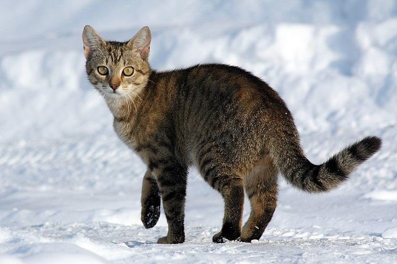

Protect the cats
Facts about cats:

Cats have very poor colour vision.
Cats don't eat cold food because if something is cold then the cat assumes that the prey item is long dead and might be toxic.
Click to donate to RSPCA:
Donate to RSPCA
List of objects you need to have a cat:
cat toys
cat food
cat beds and houses
cats
Why do cats benefit to humans:
cats help protect crops by eating mice.
cats eat rats which might spread disease.
humans can relax with cats.